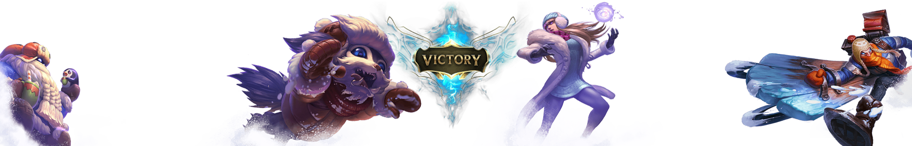
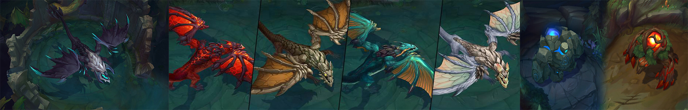
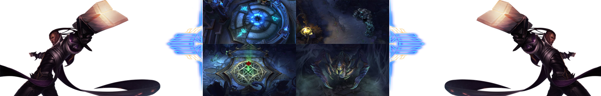

Il existe au total 3 cartes :
- La Faille de l'Invocateur : Cette carte destinée aux combats 5c5, est constituée de 3 voies et de 2 jungles séparées par une rivière, entourant la voie centrale.
- La Forêt Torturée : Il s'agit d'une forêt obscure accueillant des combats 3c3 avec 2 voies et 1 jungle.
- L'Abîme Hurlant : Une carte destinée aux combats en mode ARAM 5c5 avec 1 voie, une atmosphère polaire et dépourvue de jungle.
Chaque carte est symétrique et composée d'une ou plusieurs voies avec entre elles une jungle. Les voies sont formées d'un inhibiteur et de plusieurs tourelles.
Chaque équipe dispose d'une base, c'est à l'intérieur que se trouvent les inhibiteurs (les tourelles qui les protègent se trouvent en bordure des bases), les tourelles de nexus et le nexus lui-même. Chaque base dispose d'une fontaine, c'est la zone ou le champion apparaît et peut acheter des objets, tant qu'il reste dedans il a une régénération de vie et de mana boosté. Si un champion ennemie entre dans la fontaine un rayon provenant d'une tourelle dans la fontaine le vise immédiatement et il perd très rapidement de la vie (il mourra très rapidement s'il ne sort pas).
La bataille pour la Faille
La Faille de l'invocateur est la plus grande carte de League of Legends. Elle est symétrique et possède trois voies menant à la base ennemie. Chaque voie est défendue par trois tourelles et un inhibiteur, tandis que le Nexus est protégé par deux tourelles. Chaque côté de la carte a une jungle dans laquelle se trouvent de puissants buffs. Dans la rivière centrale, vous trouverez deux boss et un carapateur, qui offrent tous les trois des avantages à l'ensemble de votre équipe, en première ligne, vous trouverez le Drake ancestrale, il apparait à 35 minutes de jeu ! Il est suivi de 4 drakes d'élement feu, terre, eau et air ! à eux 5 ils conférent les buffs les plus puissants de la faille de l'invocateur.
Sur la droite on trouve le redbuff, roncier rouge ainsi que le blue buff aussi appelé le sentinel bleu, ils offrent un enchantement spécial aux invocateurs qui réussiront à les vaincre, pour le bluebuff se sera une régeneration de mana, pour le redbuff, se sera une augmentation du ratio AD des auto attaques et une brulure infligée à chaque coup.

Passons au Baron nashor, présent sur la gauche et droite comme on peut le voir ! ce dernier augmente grandement les dégâts d'attaque et la puissance, tout en réduisant significativement le temps qu'il faut au sort Rappel pour vous renvoyer à la base. Tous les sbires proches reçoivent également de puissants bonus qui augmentent leur portée, leurs dégâts, leur vitesse de déplacement et leur résistance aux dégâts.
Au milieu on peut appercevoir le carapateur qui révèle une zone de la rivière top ou bot lorsque quelqu'un l'achève, vu qu'il est présent sur les deux rivières à la fois, et ensuite il y a le Rift Hérald aussi appelé le Héraut de la faille, ce dernière fait office d'un mini nashor, il permet à celui qui l'achève de l'invoquer et aussi de réduire les délais de récuperation du sort rappel, une fois invoqué, il charge toute les tourelles en mettant -40% des dégats de la tour à chaque charge, il attaque aussi les sbires et repousse les champions ennemis lors de sa charge.

Défendre et détruire :
La Forêt torturée (Twisted treeline) est la deuxième carte utilisée en mode classique. Elle offre généralement des parties plus rapides et plus sanglantes, en mettant l'accent sur les ganks et les escarmouches à moindre échelle. Vous remportez la victoire en avançant dans la base adverse et en détruisant son Nexus.
La bataille pour les Îles obscures :
Plus petite que la Faille de l'invocateur, la Forêt torturée est configurée de façon horizontale, avec deux voies qui encadrent une zone neutre. Deux tourelles sont placées le long de chaque voie et le Nexus est défendu par une seule tourelle. Les équipes comptent trois champions chacune et chaque champion débute la partie avec un bon nombre de pièces d'or. La taille restreinte de la carte et la montée en niveau rapide des champions permettent aux parties de durer moins longtemps, malgré un nombre conséquent de morts dans chaque camp.
_________________________________________________________________________________________________________________________________________________________________________________________________________________________________________
Autels : Deux autels capturables sont présents dans la jungle de la Forêt torturée et ils offrent des bonus à l'équipe qui les contrôle. Disposer d'un seul autel permet de gagner un peu d'or supplémentaire quand vous tuez un sbire. Si vous disposez des deux autels, vous profitez d'un bonus important aux dégâts d'attaque et à la puissance.
Lorsque vous capturez un autel, il est verrouillé pendant quelques minutes, période pendant laquelle il ne peut pas être capturé par les joueurs ennemis.
Vilemaw : Le monstre neutre le plus puissant de la Forêt torturée est une gigantesque araignée mort-vivante, capable de défaire des équipes entières de champions. Triomphez de Vilemaw pour que toute l'équipe profite d'un bonus en or et d'un enchantement qui augmente la vitesse d'attaque, la régénération du mana et des PV, en plus de réduire les délais de récupération.
Jungle : Hé oui il y a aussi une jungle dans la forêt torturée ! Dans l'unique zone de jungle au centre de la Forêt torturée, plusieurs accès donnent sur les voies, ce qui facilite les ganks rapides et le contre-jungling agressif. Dans la Forêt torturée, les junglers attaquent rapidement et souvent les joueurs ennemis, pour aider l'une ou l'autre voie ou pour mener l'attaque vers l'autel adverse. Attendez-vous à voir beaucoup d'action dans les zones neutres de ce Champ de justice.

Défendre et détruire :
Ce qui n'était qu'une idée de la communauté est finalement devenu l'un des modes de jeu les plus populaires de League of Legends. L'Abîme hurlant (ARAM ou le Pont meurtrier, comme certains l'appellent) voit s'affronter deux équipes de cinq champions sur une voie unique et sans aucun territoire neutre. Les champions commencent au niveau 3 avec une certaine quantité d'or, pour se lancer immédiatement dans une bataille faite de combats inlassables, de morts subites et de fuites in extremis.
La bataille pour l'abîme :
L'Abîme hurlant est le seul champ de bataille de League of Legends disposant d'une voie unique. Il comprend deux bases de chaque côté d'un pont, qui est défendu par deux tourelles et un inhibiteur. Le Nexus, lui, est défendu par deux tourelles. En l'absence de territoire neutre pour vous détourner de l'objectif, l'Abîme hurlant devrait abriter quelques-uns des combats d'équipes les plus intenses, toutes cartes confondues.
_________________________________________________________________________________________________________________________________________________________________________________________________________________________________________
- Pas de soin, pas d'achat :
Dans l'Abîme hurlant, la plateforme d'invocation ne fournit aucun soin et les achats sont limités. Les champions ne peuvent acheter des objets qu'après être morts au combat. Le sort Rappel est également désactivé dans ce mode de jeu.
- Reliques de soin :
En l'absence de plateforme de guérison, vous trouverez des reliques de soin à intervalle régulier sur toute la longueur du pont. Elles permettent à votre champion de récupérer rapidement ses PV et son mana pendant une courte durée.
- Un inhibiteur unique :
Avec une seule voie à conquérir, votre succès ou votre défaite repose sur l'unique inhibiteur dont vous disposez. S'il est détruit, l'équipe adverse verra deux super-sbires apparaître à chaque vague. Défendez votre inhibiteur à tout prix sinon la victoire s'échapera sous vos yeux ébahis.

Kleimak | Tous droits réservés